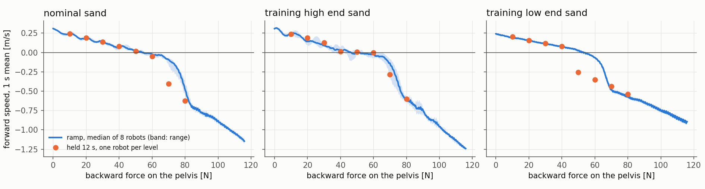
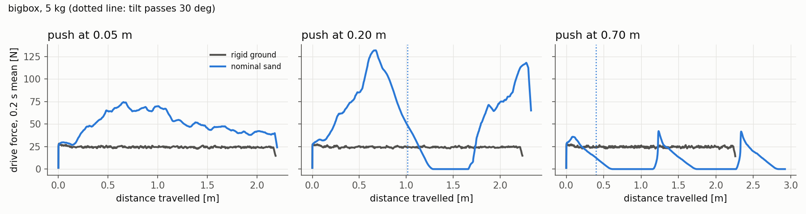
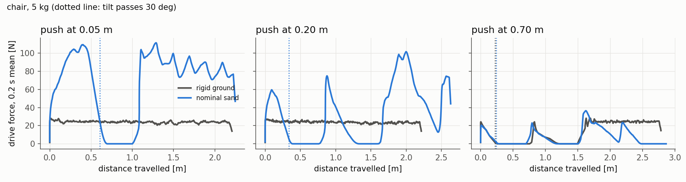
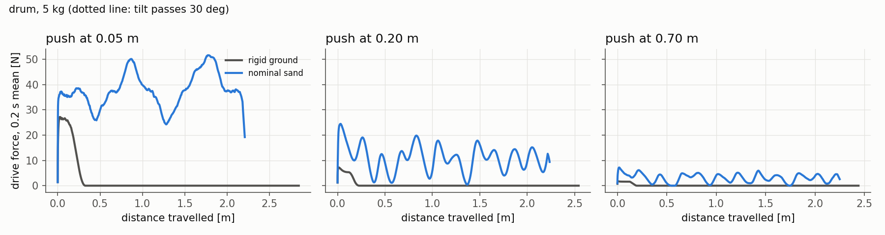
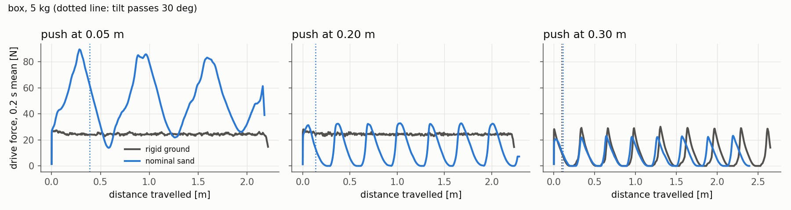
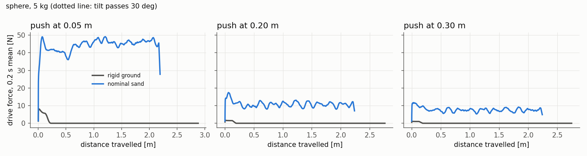
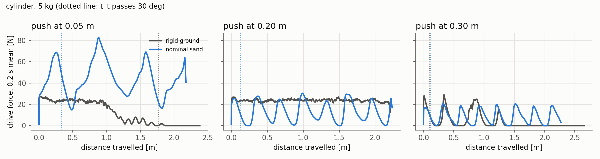
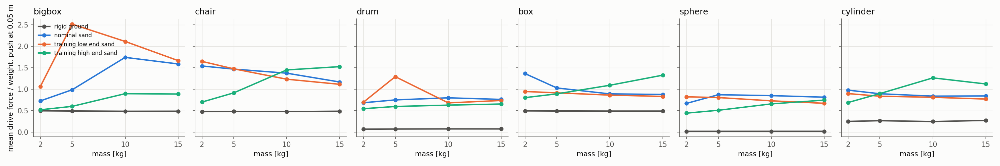
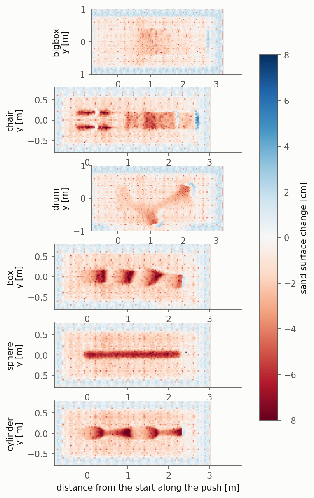

Slides built 2026-11-19. Record: outputs/T2.md. Every result here is unchecked.
No object passes cleanly. On sand every flat-bottomed object pushed at shin height or above tips, on every material tried; only rolling objects (drum, sphere) move within the force the walking policy holds. The material randomization was not what made the box hard to move: the nominal sand is harder than the high end of the training ranges.
Code: IsaacLab a60612c79 on jnskkmhr/mpm-unification, dirty tree. The probe scripts are untracked files in that tree.
Earlier slides (drum policies on the old code): policies_old_code.html.
Script scripts/benchmarks/t2/force_probe.py, figures by summarize_probe.py; raw data ~/isaac/worktrees/mpm-unification/IsaacLab/logs/t2/probe/; IsaacLab a60612c79 (dirty tree), Newton 7adb5be70 (clean tree); no policy for the objects, walking policy jqur5jhm model_19999.pt for the traction runs.
With the MPM-trained walking policy, G1 walks at half the commanded speed against about 20 N on the pelvis and stops at about 50 N, on every sand tried. The robot weighs 324 N, so this is the limit of a policy never trained against a load, not of foot friction. A force at shin height is tolerated up to about 78 N at half speed.
| Sand | Force on | Speed without force | Force at half speed, median (range) | Force at standstill, median (range) | Falls |
|---|---|---|---|---|---|
| nominal (poppy seed, loose) | pelvis | 0.30 m/s | 24 N (17-26) | 53 N (49-56) | 0 of 8 |
| nominal (poppy seed, loose) | pelvis | 0.61 m/s | 53 N (50-54) | 61 N (60-62) | 0 of 8 |
| training high end | pelvis | 0.29 m/s | 20 N (18-26) | 44 N (35-50) | 0 of 8 |
| training low end | pelvis | 0.24 m/s | 20 N (19-22) | 53 N (50-54) | 0 of 8 |
| nominal (poppy seed, loose) | left_knee_link, right_knee_link | 0.30 m/s | 78 N (75-80) | not reached | 0 of 8 |
| nominal (poppy seed, loose) | torso_link | 0.30 m/s | 17 N (16-18) | 33 N (31-36) | 0 of 8 |
| Sand | 10 N | 20 N | 30 N | 40 N | 50 N | 60 N | 70 N | 80 N |
|---|---|---|---|---|---|---|---|---|
| preset beach sand | 0.24 | 0.18 | 0.12 | 0.04 | 0.01 | -0.01 | -0.10 | -0.63 |
| heavy, high friction | 0.26 | 0.19 | 0.12 | 0.02 | 0.01 | -0.00 | -0.39 | -0.62 |
| heavy, low friction | 0.18 | 0.15 | 0.11 | 0.05 | -0.01 | -0.37 | -0.46 | -0.53 |
| nominal (poppy seed, loose) | 0.24 | 0.19 | 0.14 | 0.08 | 0.02 | -0.05 | -0.41 | -0.62 |
| preset sand | 0.22 | 0.17 | 0.12 | 0.07 | 0.00 | -0.27 | -0.49 | -0.59 |
| training high end | 0.24 | 0.19 | 0.13 | 0.01 | 0.01 | -0.00 | -0.29 | -0.60 |
| training low end | 0.20 | 0.16 | 0.12 | 0.08 | -0.26 | -0.35 | -0.44 | -0.54 |

scripts/benchmarks/t2/force_probe.py, figures by summarize_probe.py; raw data ~/isaac/worktrees/mpm-unification/IsaacLab/logs/t2/probe/; IsaacLab a60612c79 (dirty tree), Newton 7adb5be70 (clean tree); no policy for the objects, walking policy jqur5jhm model_19999.pt for the traction runs.On nominal sand it slides at 0.05 m but needs 53 N at 5 kg and 271 N at 15 kg, and tips at 0.20 m from 5 kg up. On the high end of the training ranges it slides at 0.05 m and 0.20 m at every mass (10 N at 2 kg, 31 to 40 N at 5 kg, 144 to 192 N at 15 kg). It tips at wrist height on every sand, as in the earlier probe.
| Ground | Mass | Push at 0.05 m | Push at 0.20 m | Push at 0.70 m | Sink at rest | Trench depth (low push) |
|---|---|---|---|---|---|---|
| rigid ground | 2 kg | slides, 10 N | slides, 10 N | slides, 10 N | 0.0 cm | n/a |
| rigid ground | 5 kg | slides, 24 N | slides, 24 N | slides, 24 N | 0.0 cm | n/a |
| rigid ground | 10 kg | slides, 48 N | slides, 49 N | slides, 49 N | 0.0 cm | n/a |
| rigid ground | 15 kg | slides, 73 N | slides, 73 N | slides, 74 N | 0.0 cm | n/a |
| nominal (poppy seed, loose) | 2 kg | slides, 16 N | slides, 23 N | tips after 0.4 m, 7 N | -2.6 cm | 1.1 cm |
| nominal (poppy seed, loose) | 5 kg | slides, 53 N | tips after 1.0 m, 90 N | tips after 0.4 m, 16 N | -2.1 cm | 1.7 cm |
| nominal (poppy seed, loose) | 10 kg | slides, 198 N | tips after 1.0 m, 170 N | tips after 0.4 m, 36 N | -1.9 cm | 2.8 cm |
| nominal (poppy seed, loose) | 15 kg | slides, 271 N | tips after 1.0 m, 228 N | tips after 0.4 m, 60 N | -1.9 cm | 3.3 cm |
| training high end | 2 kg | slides, 10 N | slides, 9 N | tips after 0.5 m, 7 N | -2.6 cm | 1.1 cm |
| training high end | 5 kg | slides, 31 N | slides, 40 N | tips after 0.5 m, 19 N | -2.6 cm | 1.0 cm |
| training high end | 10 kg | slides, 97 N | slides, 119 N | tips after 0.4 m, 36 N | -2.4 cm | 1.2 cm |
| training high end | 15 kg | slides, 144 N | slides, 192 N | tips after 0.4 m, 64 N | -2.2 cm | 1.4 cm |
| training low end | 2 kg | slides, 24 N | slides, 26 N | tips after 0.4 m, 6 N | -2.8 cm | 1.3 cm |
| training low end | 5 kg | slides, 146 N | tips after 0.9 m, 80 N | tips after 0.4 m, 17 N | -1.6 cm | 2.9 cm |
| training low end | 10 kg | stalls, 243 N | tips after 1.0 m, 146 N | tips after 0.4 m, 38 N | -1.3 cm | 2.8 cm |
| training low end | 15 kg | stalls, 285 N | tips after 1.0 m, 204 N | tips after 0.4 m, 65 N | -1.3 cm | 2.9 cm |
| density_high | 10 kg | slides, 77 N | slides, 101 N | tips after 0.4 m, 38 N | -2.1 cm | 1.1 cm |
| density_low | 10 kg | slides, 186 N | tips after 1.0 m, 166 N | tips after 0.4 m, 34 N | -1.8 cm | 2.8 cm |
| friction_high | 10 kg | slides, 98 N | slides, 129 N | tips after 0.5 m, 41 N | -2.2 cm | 1.4 cm |
| friction_low | 10 kg | slides, 195 N | tips after 1.0 m, 163 N | tips after 0.4 m, 35 N | -3.2 cm | 2.5 cm |
| stiffness_high | 10 kg | slides, 95 N | tips after 1.1 m, 155 N | tips after 0.4 m, 37 N | -2.2 cm | 1.3 cm |
| stiffness_low | 10 kg | slides, 98 N | tips after 1.1 m, 165 N | tips after 0.4 m, 38 N | -2.1 cm | 1.4 cm |
| train_mid | 10 kg | slides, 95 N | tips after 1.1 m, 161 N | tips after 0.4 m, 34 N | -2.5 cm | 1.3 cm |

scripts/benchmarks/t2/force_probe.py, figures by summarize_probe.py; raw data ~/isaac/worktrees/mpm-unification/IsaacLab/logs/t2/probe/; IsaacLab a60612c79 (dirty tree), Newton 7adb5be70 (clean tree); no policy for the objects, walking policy jqur5jhm model_19999.pt for the traction runs.Tips at 0.20 m and 0.70 m on every sand and every mass. Slides at 0.05 m only on the high-friction sands up to 10 kg. On rigid ground it slides at shin height and tips at wrist height.
| Ground | Mass | Push at 0.05 m | Push at 0.20 m | Push at 0.70 m | Sink at rest | Trench depth (low push) |
|---|---|---|---|---|---|---|
| rigid ground | 2 kg | slides, 9 N | slides, 9 N | tips after 0.2 m, n/a | 0.0 cm | n/a |
| rigid ground | 5 kg | slides, 24 N | slides, 24 N | tips after 0.2 m, n/a | 0.0 cm | n/a |
| rigid ground | 10 kg | slides, 48 N | slides, 47 N | tips after 0.2 m, n/a | 0.0 cm | n/a |
| rigid ground | 15 kg | slides, 73 N | slides, 70 N | tips after 0.2 m, n/a | 0.0 cm | n/a |
| nominal (poppy seed, loose) | 2 kg | tips after 1.0 m, 43 N | tips after 0.3 m, 7 N | tips after 0.2 m, n/a | 0.0 cm | 2.0 cm |
| nominal (poppy seed, loose) | 5 kg | tips after 0.6 m, 93 N | tips after 0.3 m, 20 N | tips after 0.2 m, n/a | 1.2 cm | 3.2 cm |
| nominal (poppy seed, loose) | 10 kg | tips after 0.5 m, 167 N | tips after 0.3 m, 52 N | tips after 0.3 m, n/a | 3.0 cm | 2.6 cm |
| nominal (poppy seed, loose) | 15 kg | tips after 0.5 m, 226 N | tips after 0.3 m, 92 N | tips after 0.3 m, 11 N | 4.7 cm | 2.9 cm |
| heavy, high friction | 5 kg | slides, 51 N | tips after 0.4 m, 33 N | tips after 0.2 m, n/a | -1.0 cm | 1.7 cm |
| heavy, high friction | 15 kg | tips after 1.3 m, 294 N | tips after 0.4 m, 130 N | tips after 0.2 m, n/a | -0.2 cm | 2.4 cm |
| training high end | 2 kg | slides, 14 N | tips after 1.7 m, 17 N | tips after 0.2 m, n/a | -1.3 cm | 1.5 cm |
| training high end | 5 kg | slides, 44 N | tips after 0.4 m, 28 N | tips after 0.2 m, n/a | -1.0 cm | 1.7 cm |
| training high end | 10 kg | slides, 155 N | tips after 0.3 m, 80 N | tips after 0.2 m, n/a | -0.5 cm | 2.0 cm |
| training high end | 15 kg | tips after 1.2 m, 296 N | tips after 0.3 m, 128 N | tips after 0.2 m, n/a | -0.2 cm | 2.3 cm |
| preset beach sand | 5 kg | slides, 87 N | tips after 0.3 m, 24 N | tips after 0.2 m, n/a | -0.2 cm | 2.0 cm |
| preset beach sand | 15 kg | tips after 0.6 m, 284 N | tips after 0.4 m, 120 N | tips after 0.2 m, n/a | 1.1 cm | 2.6 cm |
| preset sand | 5 kg | tips after 0.6 m, 102 N | tips after 0.3 m, 21 N | tips after 0.2 m, n/a | 0.8 cm | 2.4 cm |
| preset sand | 15 kg | tips after 0.5 m, 266 N | tips after 0.3 m, 99 N | tips after 0.3 m, n/a | 3.4 cm | 2.5 cm |
| heavy, low friction | 5 kg | tips after 0.7 m, 111 N | tips after 0.3 m, 22 N | tips after 0.2 m, n/a | 0.6 cm | 1.7 cm |
| heavy, low friction | 15 kg | tips after 0.6 m, 309 N | tips after 0.3 m, 117 N | tips after 0.3 m, n/a | 2.8 cm | 2.4 cm |
| training low end | 2 kg | tips after 0.6 m, 39 N | tips after 0.3 m, 7 N | tips after 0.2 m, n/a | 1.4 cm | 2.7 cm |
| training low end | 5 kg | tips after 0.6 m, 104 N | tips after 0.3 m, 19 N | tips after 0.3 m, n/a | 3.3 cm | 3.2 cm |
| training low end | 10 kg | tips after 0.5 m, 180 N | tips after 0.3 m, 77 N | tips after 0.3 m, 8 N | 7.1 cm | 4.3 cm |
| training low end | 15 kg | tips after 0.5 m, 255 N | tips after 0.4 m, 140 N | tips after 0.3 m, 20 N | 10.2 cm | 4.6 cm |

scripts/benchmarks/t2/force_probe.py, figures by summarize_probe.py; raw data ~/isaac/worktrees/mpm-unification/IsaacLab/logs/t2/probe/; IsaacLab a60612c79 (dirty tree), Newton 7adb5be70 (clean tree); no policy for the objects, walking policy jqur5jhm model_19999.pt for the traction runs.Rolls straight when pushed at 0.20 m or 0.70 m on every sand. At wrist height it needs 1 to 11 N from 2 to 15 kg on nominal sand, inside what the walking policy holds. Pushed 0.05 m above the sand it veers, because the push then opposes the rolling.
| Ground | Mass | Push at 0.05 m | Push at 0.20 m | Push at 0.70 m | Sink at rest | Trench depth (low push) |
|---|---|---|---|---|---|---|
| rigid ground | 2 kg | rolls, 0 N | rolls, 0 N | rolls, 0 N | 0.0 cm | n/a |
| rigid ground | 5 kg | rolls, 0 N | rolls, 0 N | rolls, 0 N | 0.0 cm | n/a |
| rigid ground | 10 kg | rolls, 0 N | rolls, 0 N | rolls, 0 N | 0.0 cm | n/a |
| rigid ground | 15 kg | rolls, 1 N | rolls, 0 N | rolls, 0 N | 0.0 cm | n/a |
| nominal (poppy seed, loose) | 2 kg | veers, 14 N | rolls, 3 N | rolls, 1 N | -1.3 cm | 1.3 cm |
| nominal (poppy seed, loose) | 5 kg | veers, 38 N | rolls, 10 N | rolls, 3 N | -1.1 cm | 1.5 cm |
| nominal (poppy seed, loose) | 10 kg | veers, 83 N | rolls, 25 N | rolls, 7 N | -0.8 cm | 1.3 cm |
| nominal (poppy seed, loose) | 15 kg | veers, 118 N | rolls, 43 N | rolls, 11 N | -0.5 cm | 1.1 cm |
| heavy, high friction | 5 kg | veers, 31 N | rolls, 6 N | rolls, 2 N | -1.6 cm | 1.1 cm |
| heavy, high friction | 15 kg | veers, 101 N | rolls, 22 N | rolls, 6 N | -1.3 cm | 1.3 cm |
| training high end | 2 kg | veers, 11 N | rolls, 2 N | rolls, 1 N | -1.7 cm | 1.0 cm |
| training high end | 5 kg | veers, 30 N | rolls, 6 N | rolls, 2 N | -1.6 cm | 1.0 cm |
| training high end | 10 kg | veers, 63 N | rolls, 13 N | rolls, 4 N | -1.4 cm | 1.0 cm |
| training high end | 15 kg | veers, 100 N | rolls, 22 N | rolls, 6 N | -1.3 cm | 1.2 cm |
| preset beach sand | 5 kg | veers, 32 N | rolls, 6 N | rolls, 2 N | -1.5 cm | 1.0 cm |
| preset beach sand | 15 kg | veers, 106 N | rolls, 26 N | rolls, 8 N | -1.2 cm | 1.4 cm |
| preset sand | 5 kg | veers, 37 N | rolls, 9 N | rolls, 3 N | -1.2 cm | 1.1 cm |
| preset sand | 15 kg | veers, 92 N | rolls, 37 N | rolls, 10 N | -0.6 cm | 1.0 cm |
| heavy, low friction | 5 kg | veers, 34 N | rolls, 7 N | rolls, 2 N | -1.1 cm | 0.9 cm |
| heavy, low friction | 15 kg | veers, 148 N | rolls, 33 N | rolls, 8 N | -0.3 cm | 0.3 cm |
| training low end | 2 kg | veers, 14 N | rolls, 4 N | rolls, 1 N | -0.8 cm | 1.1 cm |
| training low end | 5 kg | veers, 70 N | rolls, 12 N | rolls, 3 N | -0.4 cm | 0.5 cm |
| training low end | 10 kg | veers, 67 N | rolls, 38 N | rolls, 8 N | 0.2 cm | 1.6 cm |
| training low end | 15 kg | veers, 111 N | rolls, 76 N | rolls, 14 N | 1.0 cm | 1.6 cm |

scripts/benchmarks/t2/force_probe.py, figures by summarize_probe.py; raw data ~/isaac/worktrees/mpm-unification/IsaacLab/logs/t2/probe/; IsaacLab a60612c79 (dirty tree), Newton 7adb5be70 (clean tree); no policy for the objects, walking policy jqur5jhm model_19999.pt for the traction runs.Tips at shin height (0.20 m) on every sand and every mass. Slides only when pushed 0.05 m above the sand on sand with friction 0.9 (16 N at 2 kg, 47 N at 5 kg). On rigid ground it slides at 0.5 x weight at both heights.
| Ground | Mass | Push at 0.05 m | Push at 0.20 m | Push at 0.30 m | Sink at rest | Trench depth (low push) |
|---|---|---|---|---|---|---|
| rigid ground | 2 kg | slides, 10 N | slides, 10 N | tips after 0.1 m, n/a | 0.0 cm | n/a |
| rigid ground | 5 kg | slides, 24 N | slides, 24 N | tips after 0.1 m, n/a | 0.0 cm | n/a |
| rigid ground | 10 kg | slides, 49 N | slides, 49 N | tips after 0.1 m, n/a | 0.0 cm | n/a |
| rigid ground | 15 kg | slides, 73 N | slides, 73 N | tips after 0.1 m, n/a | 0.0 cm | n/a |
| nominal (poppy seed, loose) | 2 kg | tips after 1.1 m, 39 N | tips after 0.1 m, n/a | tips after 0.1 m, n/a | -1.3 cm | 1.8 cm |
| nominal (poppy seed, loose) | 5 kg | tips after 0.4 m, 80 N | tips after 0.1 m, n/a | tips after 0.1 m, n/a | -0.8 cm | 3.7 cm |
| nominal (poppy seed, loose) | 10 kg | tips after 0.3 m, 129 N | tips after 0.1 m, n/a | tips after 0.1 m, n/a | -0.1 cm | 4.2 cm |
| nominal (poppy seed, loose) | 15 kg | tips after 0.3 m, 167 N | tips after 0.1 m, n/a | tips after 0.1 m, n/a | 0.6 cm | 5.6 cm |
| heavy, high friction | 5 kg | slides, 50 N | tips after 0.2 m, n/a | tips after 0.1 m, n/a | -1.8 cm | 2.1 cm |
| heavy, high friction | 15 kg | slides, 244 N | tips after 0.2 m, n/a | tips after 0.1 m, n/a | -1.3 cm | 3.8 cm |
| training high end | 2 kg | slides, 16 N | tips after 0.2 m, n/a | tips after 0.1 m, n/a | -2.0 cm | 1.7 cm |
| training high end | 5 kg | slides, 47 N | tips after 0.2 m, n/a | tips after 0.1 m, n/a | -1.8 cm | 1.9 cm |
| training high end | 10 kg | slides, 120 N | tips after 0.2 m, n/a | tips after 0.1 m, n/a | -1.5 cm | 2.3 cm |
| training high end | 15 kg | slides, 223 N | tips after 0.2 m, n/a | tips after 0.1 m, n/a | -1.3 cm | 2.9 cm |
| preset beach sand | 5 kg | slides, 68 N | tips after 0.2 m, n/a | tips after 0.1 m, n/a | -1.4 cm | 2.7 cm |
| preset beach sand | 15 kg | tips after 0.4 m, 228 N | tips after 0.1 m, n/a | tips after 0.1 m, n/a | -0.9 cm | 3.8 cm |
| preset sand | 5 kg | tips after 0.4 m, 85 N | tips after 0.1 m, n/a | tips after 0.1 m, n/a | -0.8 cm | 3.0 cm |
| preset sand | 15 kg | tips after 0.4 m, 179 N | tips after 0.1 m, n/a | tips after 0.1 m, n/a | 0.1 cm | 4.0 cm |
| heavy, low friction | 5 kg | tips after 0.4 m, 89 N | tips after 0.1 m, n/a | tips after 0.1 m, n/a | -0.9 cm | 1.5 cm |
| heavy, low friction | 15 kg | tips after 0.4 m, 193 N | tips after 0.1 m, n/a | tips after 0.1 m, n/a | -0.0 cm | 3.2 cm |
| training low end | 2 kg | tips after 0.4 m, 34 N | tips after 0.1 m, n/a | tips after 0.1 m, n/a | -0.5 cm | 2.5 cm |
| training low end | 5 kg | tips after 0.4 m, 67 N | tips after 0.1 m, n/a | tips after 0.1 m, n/a | 0.2 cm | 3.9 cm |
| training low end | 10 kg | tips after 0.4 m, 108 N | tips after 0.1 m, n/a | tips after 0.1 m, n/a | 1.5 cm | 5.6 cm |
| training low end | 15 kg | tips after 0.3 m, 142 N | tips after 0.1 m, n/a | tips after 0.1 m, n/a | 2.7 cm | 6.9 cm |
| density_high | 10 kg | tips after 0.5 m, 169 N | tips after 0.1 m, n/a | tips after 0.1 m, n/a | -1.1 cm | 3.0 cm |
| density_low | 10 kg | tips after 0.3 m, 136 N | tips after 0.1 m, n/a | tips after 0.1 m, n/a | -0.5 cm | 3.3 cm |
| friction_high | 10 kg | slides, 164 N | tips after 0.1 m, n/a | tips after 0.1 m, n/a | -1.2 cm | 3.5 cm |
| friction_low | 10 kg | tips after 0.4 m, 134 N | tips after 0.1 m, n/a | tips after 0.1 m, n/a | 0.1 cm | 3.1 cm |
| stiffness_high | 10 kg | tips after 0.4 m, 162 N | tips after 0.1 m, n/a | tips after 0.1 m, n/a | -0.9 cm | 3.2 cm |
| stiffness_low | 10 kg | tips after 0.4 m, 164 N | tips after 0.1 m, n/a | tips after 0.1 m, n/a | -0.9 cm | 3.4 cm |
| train_mid | 10 kg | tips after 0.4 m, 163 N | tips after 0.1 m, n/a | tips after 0.1 m, n/a | -0.9 cm | 3.3 cm |

scripts/benchmarks/t2/force_probe.py, figures by summarize_probe.py; raw data ~/isaac/worktrees/mpm-unification/IsaacLab/logs/t2/probe/; IsaacLab a60612c79 (dirty tree), Newton 7adb5be70 (clean tree); no policy for the objects, walking policy jqur5jhm model_19999.pt for the traction runs.Rolls on every sand without leaving its line. Pushed at 0.20 m on nominal sand: 3 N at 2 kg, 11 N at 5 kg, 26 N at 10 kg, 43 N at 15 kg. It sinks 2 to 7 cm on nominal sand, which is where the rolling resistance comes from; on rigid ground it needs about 0 N.
| Ground | Mass | Push at 0.05 m | Push at 0.20 m | Push at 0.30 m | Sink at rest | Trench depth (low push) |
|---|---|---|---|---|---|---|
| rigid ground | 2 kg | rolls, 0 N | rolls, 0 N | rolls, 0 N | 0.0 cm | n/a |
| rigid ground | 5 kg | rolls, 0 N | rolls, 0 N | rolls, 0 N | 0.0 cm | n/a |
| rigid ground | 10 kg | rolls, 0 N | rolls, 0 N | rolls, 0 N | 0.0 cm | n/a |
| rigid ground | 15 kg | rolls, 0 N | rolls, 0 N | rolls, 0 N | 0.0 cm | n/a |
| nominal (poppy seed, loose) | 2 kg | rolls, 13 N | rolls, 3 N | rolls, 2 N | 2.0 cm | 2.2 cm |
| nominal (poppy seed, loose) | 5 kg | rolls, 45 N | rolls, 11 N | rolls, 7 N | 3.4 cm | 4.1 cm |
| nominal (poppy seed, loose) | 10 kg | rolls, 89 N | rolls, 26 N | rolls, 18 N | 5.4 cm | 5.8 cm |
| nominal (poppy seed, loose) | 15 kg | rolls, 128 N | rolls, 43 N | rolls, 30 N | 7.1 cm | 7.6 cm |
| heavy, high friction | 5 kg | rolls, 24 N | rolls, 7 N | rolls, 5 N | 0.6 cm | 2.0 cm |
| heavy, high friction | 15 kg | rolls, 112 N | rolls, 29 N | rolls, 20 N | 2.2 cm | 2.5 cm |
| training high end | 2 kg | rolls, 8 N | rolls, 2 N | rolls, 1 N | -0.0 cm | 1.9 cm |
| training high end | 5 kg | rolls, 23 N | rolls, 7 N | rolls, 5 N | 0.6 cm | 2.1 cm |
| training high end | 10 kg | rolls, 64 N | rolls, 16 N | rolls, 11 N | 1.4 cm | 2.2 cm |
| training high end | 15 kg | rolls, 112 N | rolls, 28 N | rolls, 19 N | 2.2 cm | 2.5 cm |
| preset beach sand | 5 kg | rolls, 32 N | rolls, 9 N | rolls, 6 N | 1.7 cm | 2.2 cm |
| preset beach sand | 15 kg | rolls, 131 N | rolls, 33 N | rolls, 22 N | 3.5 cm | 3.8 cm |
| preset sand | 5 kg | rolls, 44 N | rolls, 10 N | rolls, 7 N | 2.7 cm | 3.0 cm |
| preset sand | 15 kg | rolls, 128 N | rolls, 41 N | rolls, 28 N | 6.1 cm | 4.9 cm |
| heavy, low friction | 5 kg | rolls, 43 N | rolls, 10 N | rolls, 6 N | 2.2 cm | 2.1 cm |
| heavy, low friction | 15 kg | rolls, 126 N | rolls, 39 N | rolls, 27 N | 5.4 cm | 3.8 cm |
| training low end | 2 kg | rolls, 16 N | rolls, 4 N | rolls, 3 N | 2.9 cm | 2.7 cm |
| training low end | 5 kg | rolls, 41 N | rolls, 13 N | rolls, 9 N | 5.8 cm | 4.1 cm |
| training low end | 10 kg | rolls, 74 N | rolls, 29 N | rolls, 21 N | 9.3 cm | 5.6 cm |
| training low end | 15 kg | rolls, 103 N | rolls, 45 N | rolls, 32 N | 11.8 cm | 6.5 cm |
| density_high | 10 kg | rolls, 91 N | rolls, 18 N | rolls, 13 N | 2.0 cm | 2.4 cm |
| density_low | 10 kg | rolls, 93 N | rolls, 25 N | rolls, 17 N | 4.7 cm | 5.2 cm |
| friction_high | 10 kg | rolls, 73 N | rolls, 19 N | rolls, 13 N | 2.4 cm | 2.7 cm |
| friction_low | 10 kg | rolls, 85 N | rolls, 26 N | rolls, 18 N | 5.4 cm | 3.8 cm |
| stiffness_high | 10 kg | rolls, 96 N | rolls, 21 N | rolls, 14 N | 2.7 cm | 3.1 cm |
| stiffness_low | 10 kg | rolls, 94 N | rolls, 21 N | rolls, 14 N | 2.8 cm | 3.0 cm |
| train_mid | 10 kg | rolls, 95 N | rolls, 21 N | rolls, 14 N | 2.7 cm | 3.2 cm |

scripts/benchmarks/t2/force_probe.py, figures by summarize_probe.py; raw data ~/isaac/worktrees/mpm-unification/IsaacLab/logs/t2/probe/; IsaacLab a60612c79 (dirty tree), Newton 7adb5be70 (clean tree); no policy for the objects, walking policy jqur5jhm model_19999.pt for the traction runs.Same as the box: tips at 0.20 m on every sand; slides at 0.05 m only on the high-friction sands up to 10 kg.
| Ground | Mass | Push at 0.05 m | Push at 0.20 m | Push at 0.30 m | Sink at rest | Trench depth (low push) |
|---|---|---|---|---|---|---|
| rigid ground | 2 kg | tips after 1.6 m, 6 N | slides, 10 N | tips after 0.1 m, n/a | 0.0 cm | n/a |
| rigid ground | 5 kg | tips after 1.8 m, 14 N | slides, 24 N | tips after 0.1 m, n/a | 0.0 cm | n/a |
| rigid ground | 10 kg | tips after 1.7 m, 28 N | slides, 48 N | tips after 0.1 m, n/a | 0.0 cm | n/a |
| rigid ground | 15 kg | tips after 1.7 m, 46 N | slides, 71 N | tips after 0.1 m, n/a | 0.0 cm | n/a |
| nominal (poppy seed, loose) | 2 kg | tips after 0.4 m, 33 N | tips after 0.1 m, n/a | tips after 0.1 m, n/a | -1.0 cm | 2.2 cm |
| nominal (poppy seed, loose) | 5 kg | tips after 0.3 m, 64 N | tips after 0.1 m, n/a | tips after 0.1 m, n/a | -0.6 cm | 3.6 cm |
| nominal (poppy seed, loose) | 10 kg | tips after 0.2 m, n/a | tips after 0.1 m, n/a | tips after 0.1 m, n/a | 0.3 cm | 5.2 cm |
| nominal (poppy seed, loose) | 15 kg | tips after 0.2 m, 127 N | tips after 0.1 m, n/a | tips after 0.1 m, n/a | 1.0 cm | 7.0 cm |
| heavy, high friction | 5 kg | slides, 48 N | tips after 0.2 m, n/a | tips after 0.1 m, n/a | -1.3 cm | 2.1 cm |
| heavy, high friction | 15 kg | tips after 0.5 m, 213 N | tips after 0.1 m, n/a | tips after 0.1 m, n/a | -1.0 cm | 2.1 cm |
| training high end | 2 kg | slides, 14 N | tips after 0.2 m, n/a | tips after 0.1 m, n/a | -1.6 cm | 1.8 cm |
| training high end | 5 kg | slides, 47 N | tips after 0.2 m, n/a | tips after 0.1 m, n/a | -1.4 cm | 2.1 cm |
| training high end | 10 kg | slides, 140 N | tips after 0.1 m, n/a | tips after 0.1 m, n/a | -1.2 cm | 1.7 cm |
| training high end | 15 kg | tips after 0.4 m, 208 N | tips after 0.1 m, n/a | tips after 0.1 m, n/a | -1.1 cm | 2.8 cm |
| preset beach sand | 5 kg | tips after 0.5 m, 81 N | tips after 0.1 m, n/a | tips after 0.1 m, n/a | -1.3 cm | 2.6 cm |
| preset beach sand | 15 kg | tips after 0.3 m, 187 N | tips after 0.1 m, n/a | tips after 0.1 m, n/a | -0.6 cm | 3.2 cm |
| preset sand | 5 kg | tips after 0.3 m, 71 N | tips after 0.1 m, n/a | tips after 0.1 m, n/a | -0.6 cm | 2.8 cm |
| preset sand | 15 kg | tips after 0.3 m, 149 N | tips after 0.1 m, n/a | tips after 0.1 m, n/a | 0.5 cm | 4.7 cm |
| heavy, low friction | 5 kg | tips after 0.3 m, 78 N | tips after 0.1 m, n/a | tips after 0.1 m, n/a | -0.6 cm | 1.7 cm |
| heavy, low friction | 15 kg | tips after 0.3 m, 166 N | tips after 0.1 m, n/a | tips after 0.1 m, n/a | 0.4 cm | 3.4 cm |
| training low end | 2 kg | tips after 0.3 m, n/a | tips after 0.1 m, n/a | tips after 0.1 m, n/a | -0.4 cm | 2.7 cm |
| training low end | 5 kg | tips after 0.3 m, 56 N | tips after 0.1 m, n/a | tips after 0.1 m, n/a | 0.6 cm | 4.0 cm |
| training low end | 10 kg | tips after 0.2 m, n/a | tips after 0.1 m, n/a | tips after 0.1 m, n/a | 2.5 cm | 5.7 cm |
| training low end | 15 kg | tips after 0.2 m, n/a | tips after 0.1 m, n/a | tips after 0.1 m, n/a | 4.0 cm | 6.6 cm |
| density_high | 10 kg | tips after 0.4 m, 149 N | tips after 0.1 m, n/a | tips after 0.1 m, n/a | -1.0 cm | 2.5 cm |
| density_low | 10 kg | tips after 0.3 m, 114 N | tips after 0.1 m, n/a | tips after 0.1 m, n/a | -0.3 cm | 4.1 cm |
| friction_high | 10 kg | tips after 0.5 m, 152 N | tips after 0.1 m, n/a | tips after 0.1 m, n/a | -1.0 cm | 2.5 cm |
| friction_low | 10 kg | tips after 0.3 m, 116 N | tips after 0.1 m, n/a | tips after 0.1 m, n/a | 0.5 cm | 3.5 cm |
| stiffness_high | 10 kg | tips after 0.4 m, 133 N | tips after 0.1 m, n/a | tips after 0.1 m, n/a | -0.8 cm | 3.1 cm |
| stiffness_low | 10 kg | tips after 0.4 m, 133 N | tips after 0.1 m, n/a | tips after 0.1 m, n/a | -0.8 cm | 2.9 cm |
| train_mid | 10 kg | tips after 0.3 m, 133 N | tips after 0.1 m, n/a | tips after 0.1 m, n/a | -0.8 cm | 2.7 cm |

scripts/benchmarks/t2/force_probe.py, figures by summarize_probe.py; raw data ~/isaac/worktrees/mpm-unification/IsaacLab/logs/t2/probe/; IsaacLab a60612c79 (dirty tree), Newton 7adb5be70 (clean tree); no policy for the objects, walking policy jqur5jhm model_19999.pt for the traction runs.Sand friction is the parameter that matters: at 10 kg, friction 0.9 alone makes both boxes slide where friction 0.3 or 0.6 lets them tip or dig in. Density helps the big box (77 N at density 3000 against 186 N at density 1000, 10 kg, low push) and reduces sinkage. Stiffness and yield pressure change nothing measurable. The easiest sand tried is density 3000 kg/m3 with friction 0.9 (training high end, or the same with rigid elasticity).

scripts/benchmarks/t2/force_probe.py, figures by summarize_probe.py; raw data ~/isaac/worktrees/mpm-unification/IsaacLab/logs/t2/probe/; IsaacLab a60612c79 (dirty tree), Newton 7adb5be70 (clean tree); no policy for the objects, walking policy jqur5jhm model_19999.pt for the traction runs.
scripts/benchmarks/t2/force_probe.py, figures by summarize_probe.py; raw data ~/isaac/worktrees/mpm-unification/IsaacLab/logs/t2/probe/; IsaacLab a60612c79 (dirty tree), Newton 7adb5be70 (clean tree); no policy for the objects, walking policy jqur5jhm model_19999.pt for the traction runs.Pass means: the object moves as intended (slides or rolls, no tipping) and needs no more than the force the walking policy holds at half speed (20 N on the pelvis for hands; 78 N at the shins for legs). The robot-side limits come from an untrained-for-load policy, so a fail on force alone may not be final.
| Object | Verdict | Mass and push height | Hands or legs | Why |
|---|---|---|---|---|
| Drum (r 0.5 m) | pass | 2 to 15 kg at 0.70 m (1 to 11 N), any sand | hands | rolls straight; rigid ground needs about 0 N, so sand adds the only resistance |
| Sphere (r 0.15 m) | pass | 2 to 10 kg at 0.20 m (3 to 26 N nominal; 2 to 16 N high-friction sand) | legs (0.30 m tall, below standing wrist reach) | rolls; resistance grows with sinkage |
| Big box (1.0 x 0.8 x 1.0 m) | pass only light, low, on high-friction sand | 2 kg at 0.20 m (9 N); 5 kg needs 31 to 40 N | legs | tips at wrist height on every sand; on nominal sand tips at 0.20 m from 5 kg |
| Small box (0.3 m) | fail | none at shin height | - | tips at 0.20 m on every sand and mass |
| Upright cylinder | fail | none at shin height | - | tips at 0.20 m on every sand and mass |
| Chair (disc feet) | fail | none at shin or wrist height | - | tips at 0.20 m and 0.70 m on every sand and mass; on bare legs it sinks about 2 to 4 cm more at rest (2 and 5 kg, nominal sand) |